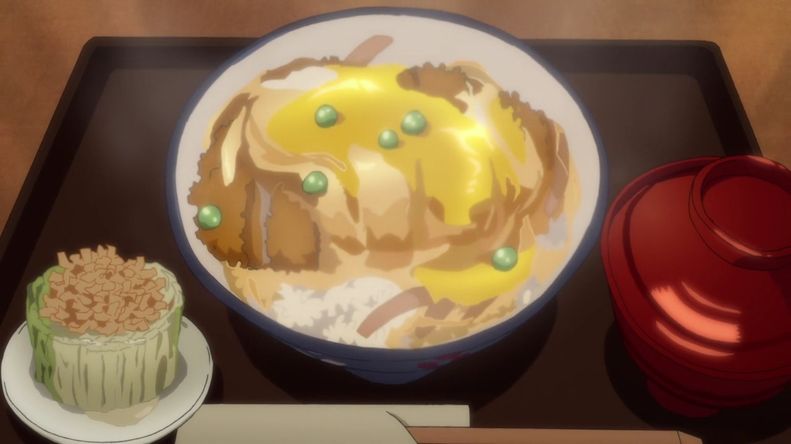
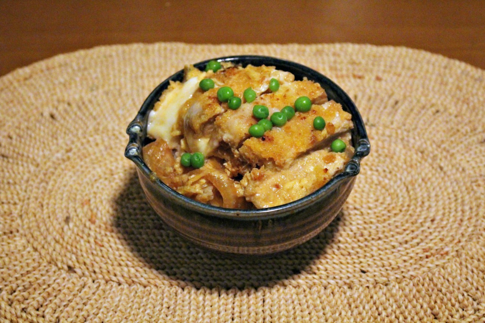
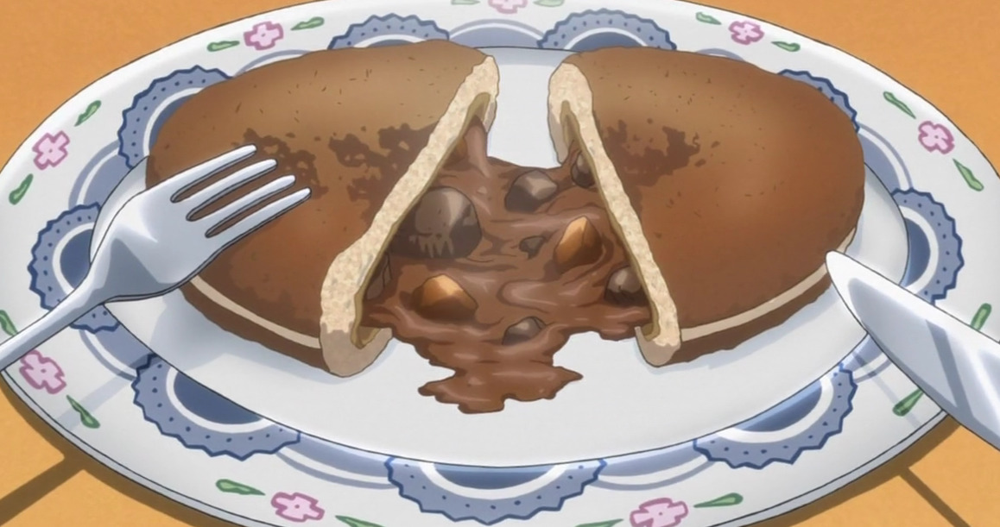
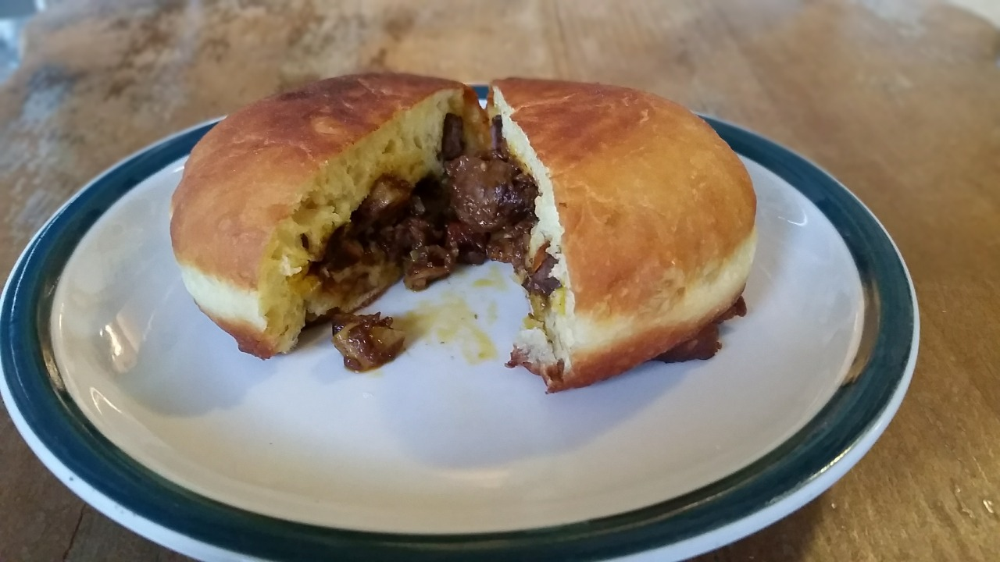
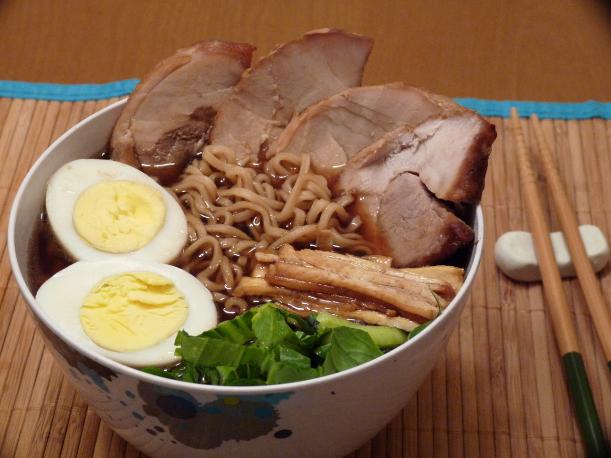
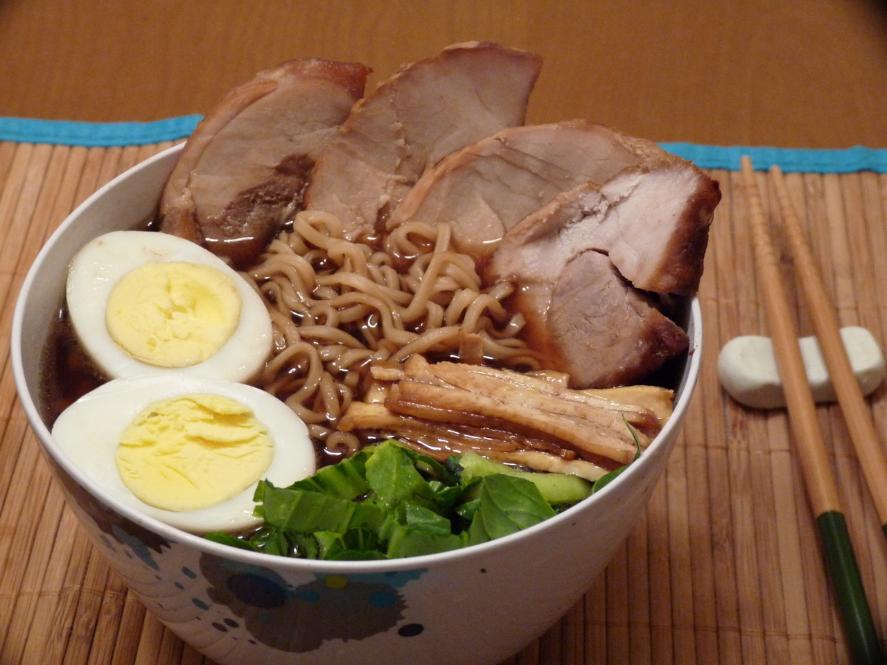

Anime Recipes To Try At Home

Have you ever feel the food in japanese audiovisuals can become
extra character in the stories. Bringing to live that appetite to
include a delicious meal in your day?
I mean just look at calcifer making something so simmple like eggs
and bacon look so damn delicious.
Here are some of the best anime foods for you to cook at home
Recipe 1
Katsudon! From Yuri on Ice


what could be more desirable than a steaming bowl of rice,
breaded pork cutlet, onions, and egg.
Cook time: 30 minutes
Preparation time: 15 minutes
Total time: 1 hour
Yields: 3 yields
Ingredients
- 3 cups cooked rice
- 2 boneless pork chops (and a meat mallet)
- Salt and pepper
- Flour for dusting
- 1 egg, beaten, for breading
- 1 cup panko
-
½ cup dashi stock (you can use chicken or vegetable stock if
you can’t get a hold of some dashi or dashi powder)
- 1 Tbsp. soy sauce
- 2 Tbsp. mirin
- 2 tsp. sugar
- 1 small onion, sliced thin
- 2 eggs
-
¼ cup peas (alternatively, you can top it with scallions/green
onions, thinly sliced nori, sesame seeds, whole snowpeas, and
any combination of any of these)
Instructions
-
Begin heating up some oil in a deep pan on the stove. About ½”
of oil should do. Alternatively, if you have a deep fryer and
feel comfortable using it, go ahead a use that for the pork
katsu.
- Use a meat mallet to pound the pork to about ¼” thick.
-
Season the pork chops with salt and pepper, and dust them with
the flour.
-
Dip the pork into the first beaten egg, then coat them with
panko crumbs.
-
Once the oil is hot (get some water on your hand and flick it
into the oil from a safe distance above, if it sizzles and pops,
the oil is ready), place the breaded pork into the oil. Fry
them until golden brown on each side. Once they’re cooked,
remove them from the oil, and set them aside on a plate with
some paper towels to absorb the excess oil.
-
If you haven’t already made your rice, start cooking it now,
using this recipe.
-
Add the stock, soy sauce, mirin and sugar to a pan (one big
enough to hold both pork chops) and bring it to a simmer. Add
in the onions and cover the pan with a lid.
-
Once the onions are translucent, slice the pork katsu, and
carefully (as to keep the slices together, treating them as if
it were still a whole cutlet) add it on top of the onions.
-
Beat the remaining two eggs and pour them on top of the pork
katsu. Cover the pan with the lid.
- Begin portioning the rice into two bowls.
-
Once the eggs are done (still kind of jiggly and slimy looking,
but definitely not liquid anymore. If you’re squeamish about
eggs, feel free to cook it a bit longer, but be careful not to
allow the egg to become dry and fluffy), pick up the pan and
slide/pour the sauce, onions, katsu, and egg onto the rice in
the bowl.
- Top with peas or your choice of garnish.
-
Reward yourself with this delicious meal. (But only after you
win the skating competition, of course.)
Recipe 2
Chocolate Curry Buns - Black Butler


This recipe is a “high class”, very British way of looking at
the curry bun, with attention paid to how Sebastian cooked his
in the show.
Cook time: 40 minutes
Preparation time: 10 minutes
Total time: 50 minutes
Yields: 2 yields
Ingredients
Curry roux:
- 3 tbsp. butter
- ⅓ cup flour
- 2 tbsp.. garam masala
-
1-2 tsp freshly ground black pepper (depending on how spicy you
want it)
- 1 tbs. tomato paste
- 1 tbs. Worcestershire sauce
Dough:
- 2 ½ cups all-purpose flour
- 1 tsp. dry yeast
- 2 tbsp. sugar
- 1 tsp. salt
- 1 tbsp. skim milk powder
- ½ cup water
- 1 egg
- 2 tbsp. butter
Filling
- 2 tbsp. oil
- 1 small onion, sliced thin
- 1 clove of garlic, minced
- ½ pound beef chuck roast, cubed, or stew meat
-
¼ cup red wine (substitute 1/8 cup balsamic vinegar and 1/8
cup all-natural grape juice if you can’t get wine)
- 1 carrot
- 1 medium pre-cooked yukon gold potato
- 1 tbsp. apple puree or apple sauce
- 1 cardamom pod
- 1 whole star anise pod
- 1 bay leaf
- ⅓ cup peas (optional)
- Half of a bar of dark chocolate
Instructions
-
First, we’re going to start with the roux. Melt the butter over
medium low heat.
-
Add the flour and whisk the butter and flour together in the
pan until the mixture turns a golden brown.
-
Add the garam masala and black pepper and stir to combine, then
add the tomato paste and Worcestershire sauce and combine.
Continue to cook until it becomes thick and paste-like. Remove
from heat and set aside until the meat and veggies are ready.
-
Combine yeast, water, and sugar in a bowl. Let it sit for
5-10 minutes, until foamy.
-
Add the rest of the dough ingredients and knead for 8-10
minutes.
-
Cover with a dish towel and allow dough to rise in a warm place
until doubled in size, about 1 to 1½ hours. If it’s cool in
the kitchen, I frequently turn on a stove top burner, and let
the dough sit on the counter near it to help the rising process.
-
Divide the dough into 8 equal portions. Let rest for 10 minutes
(make sure not to let them dry out, cover them with a damp paper
towel or two).
-
Heat 1 tablespoon of oil in your pan. Pat the beef down with a
paper towel to remove any excess moisture, sprinkle some salt
and pepper on the meat, and dust with a bit of flour. Once the
pan is hot, add your meat, cooking for about 6-7 minutes on each
side, or until nice and brown. Then, put the meat into a bowl
and set aside.
-
Heat oil in a pan, and saute onion and garlic. While sauteing,
grind the cardamom and anise.
-
Add the browned beef, wine, water, carrots, potatoes, salt,
apple puree, cardamom, anise, and bay leaf, and then bring to a
boil over high heat.
-
Turn the heat down to medium low and simmer partially covered
until the carrots are tender (about 45 minutes).
-
Add in the curry roux that you set aside in step 3 and the
chocolate, and stir until the roux and liquid in the pan combine
and thicken into a nice curry sauce. Set aside to cool, and
don’t forget to remove the bay leaf.
-
Dust your hands with flour! Flatten the dough balls into a
round disc, place a spoonful of filling in the middle, and wrap
wrap the edges around the filling. Gently shape each dough ball
into a bun.
-
In a frying pan, heat about an inch of oil (vegetable, canola,
or sunflower oil are preferred). Add the buns, however many will
fit in your pan at a time. Fry them on medium/low until golden
brown, turning over to cook each side.
-
Let them cool, then present to the judges. Or your friends.
Or just eat them yourself.
Recipe 3
Naruto Ramen
 

These hot steaming bowls of ramen seemed like the absolute
perfect meal.
Cook time: 30 minutes
Preparation time: 15 minutes
Total time: 1 hour
Yields: 2 yields
Ingredients
- 2 Packages of Top Ramen
-
About 5 cups of pork or beef broth (You can use the stuff in a
box, the stuff in a can, or the cubes or the paste)
- Pork tenderloin
- 2 Eggs
- 1 Baby bok choy
- 1 Green Onion
- Soy sauce
Optional
-
Aburage - that's those brown sticks on the right side of the
bowl, it's a type of soy product that's used when you make
inari-zushi. It's some of my favorite stuff, and you should be
able to find it at an Asian food store.
-
Nori - I forgot to put this is mine, but it's those black/green
sheets sticking out of the back. You'd probably be able to find
this at any grocery store with an Asian foods section
-
Kamaboko - This is that white thing with the pink swirl. Its
made of a sort of fish paste that is steamed into like a cake.
I know it's kind of distintive in the Naruto ramen, but I didn't
have time to go and grab some from an Asian food store (which is
where you'd have to get it).
Instructions
-
Marinate the tenderloin for at least 3 hours. You can use just
soy sauce, or a mixure of whatever other Asian sauces you want.
Teriyaki would be good, as would some mirin.
-
Preheat your oven to 450, then cook the tenderloin for 12-15
minutes, or until cooked all the way through.
-
Put your eggs in a pot with enough water to cover them. Bring
to a boil and cover with a lid. It should take about 10 minutes
to hard boil the eggs. Then pull them out and put them into a
bowl of cold water to cool.
-
While this is happening, pour or mix the stock/broth in a pot
and bring it to a simmer. You can add soy sauce or mirin to
taste.
-
Once simmering, add the Top Ramen noodles. Do NOT add in the
flavor packets. Let that cook.
-
Now, we cut up all the toppings! Peel the eggs and slice them
in half, cut the pork, kamaboko, bok choy, aburage, and green
onion into thin slices.
-
Serve up the noodles and broth in a nice deep bowl, then place
all the ingredients in groups on top, and add in a few small
rectangles of nori. Itadakimasu!